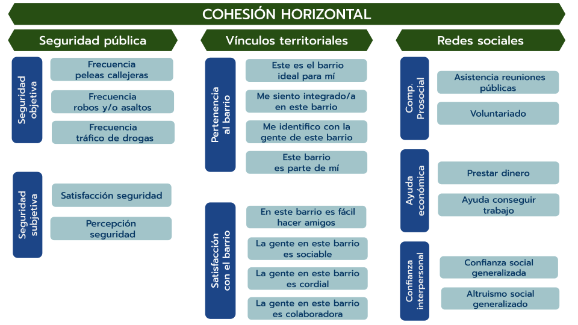
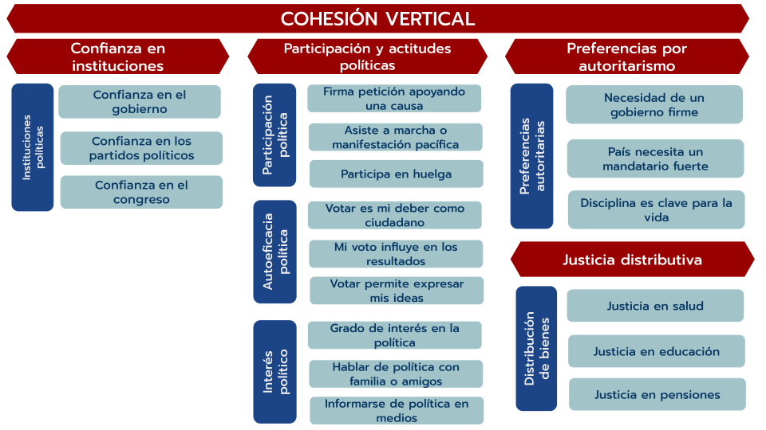

Todos los gráficos fueron construidos a partir de los datos del Estudio Longitudinal Social de Chile (ELSOC), COES. Para ello, se han considerado a los individuos que han participado a lo menos en 3 olas del estudio. Para más información, consulte aquí.
Para usar alguna de las figuras, citar como: Urzúa, T., Iturra, J., Canales, R., Laffert, A. & Castillo, J. (2025). Visualizador Longitudinal de Cohesión Social de Chile 2016-2023.
Instrucciones generales:
Longitudinal: En este apartado se comparan los promedios de las dimensiones y subdimensiones a través de un gráfico de líneas histórico. Para proyectar los análisis, debes seleccionar un elemento a visualizar.
Ranking: Sigue la misma lógica que la sección anterior, pero aquí se comparan los cambios a través del tiempo de los indicadores que componen las subdimensiones.
Bivariado: Aquí se pueden cruzar subdimensiones de cohesión social con variables sociodemográficas, observando cómo se han comportado distintos grupos sociales durante los años.
Todos los indicadores, subdimensiones y dimensiones fueron construidos a partir de índices promediados.
Más información sobre la selección de variables, validación de los datos y construcción de los índices la puedes encontrar en el Documento Metodológico (esquina superior derecha).
Los indicadores de cohesión social disponibles en el visualizador son los que se presentan en los siguientes esquemas:

